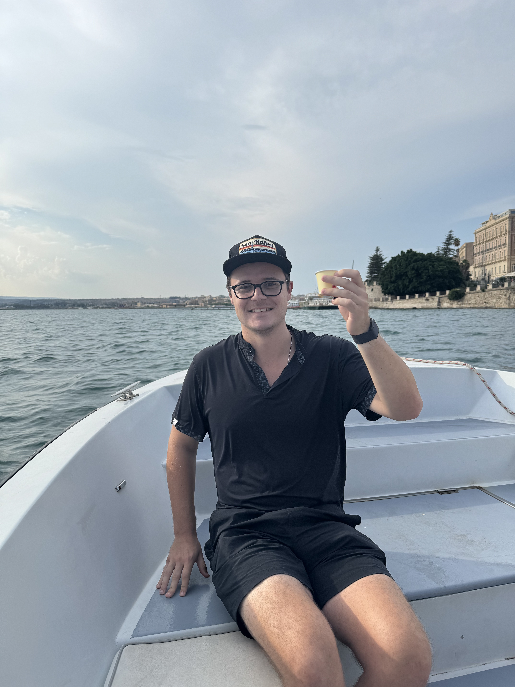
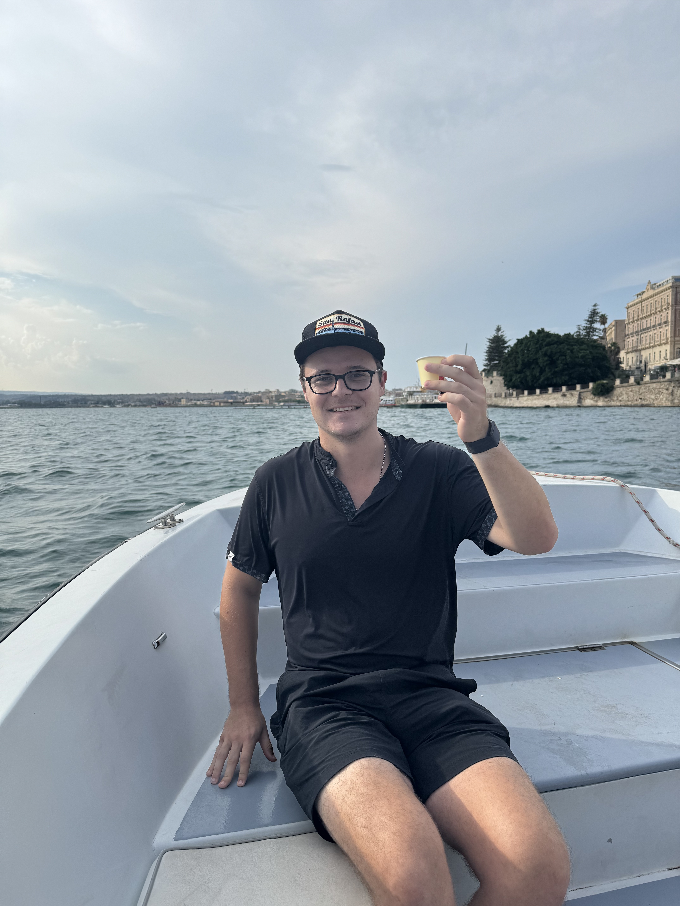

Catania

I flew from Split, Croatia, to Rome to Catania. After the long travel day, I was greeted by views of Mount Etna and arancini. I had arancini at the restaurant Cucina Paradiso in Petaluma, close to where I live, and instantly fell in love with it. It is a Sicilian staple. I had it again at a Sicilian street food shop in Berlin called Amici Amici. Surprisingly, I think the arancini at Amici Amici were even better than all the Italian ones because they fried it fresh to order. It was rare to find freshly made-to-order arancini in Sicily. I also had my first Messina beer, something you can only get in Italy. It was the first of many and turned out to be my second favorite beer in the world after the Flanders Red.


Catania’s street markets were incredible, too. I went first thing in the morning when they still had all the fresh fish caught earlier that morning. Swordfish was the easiest to spot with the large pointy nose. I wish I could have tried some fish from the market but I didn’t have any way to cook food staying at the hostel.
Taormina

I took a regional train up to Taormina. Throughout the train ride, I took pictures of the countryside out the window. I smiled at the beauty and originality of the land, communities, and coastlines. Upon my arrival, I took a bus from the train station to town. The bus ride was straight up a windy hill with many switchbacks. This was my introduction to Italian driving and road conditions. It would only get crazier from here (some foreshadowing for later). On top of the hill is a beautiful town with unbelievable coastal views in both directions. You could even see mainland Italy from there. Taormina perfectly combined rustic culture, vacation vibes, and coastal natural beauty.


This was my birthday meal. I turned 26 in Taormina. Pistachio and normal bruschetta, lasagna, and Messina. I went to a fantastic pastry shop for a pistachio cannoli for dessert. They didn’t have any large ones left in the case, so I asked about it, and the woman went to the back and made me a fresh one.
This beach was directly below the first hotel I stayed at. It was down a small path outside the back of the hotel. To my surprise, it was sandy, a pleasant surprise after all the rocky beaches in Croatia. It was super cozy and tucked away between two rocky points. This is what I imagined beaches in Sicily would be like and it delivered.
The beaches were carved out below the rocky cliffs propping up the city. The combination of cliffs and beaches was unique and breathtaking.
Opposite the beaches was the island’s focal point, the Mount Etna volcano. People who live in Sicily nicknamed it “Mama” because of its power and figure. There were mini eruptions only a few weeks before I got there, which spit ash. Looking out the second hotel I stayed at’s window, I could see the volcano smoking. It was beautiful, and I didn’t feel at all scared. Even though it was miles and miles away, the spectacle of the smoking volcano was clear. Our tour went up to the top of the volcano, and it hailed, painting it white. We took shelter in the visitor center/restaurant during the storm. At such high elevations, the rain turned into large pounding hail.
After going to the volcano’s craters, we went to a winery at the bottom of the mountain. They had their lower quality wine available for locals to fill up their own bottles for 2 Euros.
This selfie is one of my favorite pictures I took on my trip. It was right after hiking from the beaches up to the top of the cliffs. I was sweating but elated after doing something challenging, plus admiring the gorgeous view.
Syracusa
 

Syracusa sunset overlooking the bay. The sky and sunset were beautiful. Our tour took a boat ride around the bay while enjoying some wine. To finish the boat ride, we went under a small bridge where we had to duck and barely fit through the gap.


A massive quarry from the Roman Empire is still thriving in Syracusa. Next to the quarry is a 5,000-capacity amphitheater carved out of stone and a smaller coliseum where gladiators and sporting events were held for the entertainment of the Roman citizens. Right below the ancient city were a few swim spots on platforms and large boulders. I didn’t swim there, but it was a hot activity for tourists and locals.
Enna
I went to the city where my Mom’s family is from Enna, Sicily. It was in the middle of nowhere on the top of a hill in central Sicily. On the outskirts of the city, next to the soccer stadium, there is an obelisk marking the center of the entire island of Sicily. The highlight of the city is the Duomo Church, which is detailed throughout. There are infinite small details everywhere you look. Some churches are impressive for their size, but this one was for the details.

The traditional Sicilian breakfast is granita, brioche, and espresso. Granita is just ice, some type of flavor, and sugar. I couldn’t have enough of it. It was so refreshing from the heat and had no dairy, giving it character. I got as much pistachio granita as possible on the trip.
We hiked across the city to a watchtower that King Ferdinand built in the 1600s. We could walk right inside and hike to the top. The view overlooked the whole city, the soccer stadium, and the valleys below.
Agrigento


Our tour stopped in Agrigento for two nights to see the ancient Roman temples. There were 4 temples still standing because they were renovated somewhat recently. Each temple was made to honor a different Roman god because they had Pagan beliefs. The temples were built on top of a hill and can be seen from every viewpoint. Along with the temples, lots of ancient tombs nearby were carved into the hillside so the dead could rest close to the temples.
Boys playing soccer at a sports court next to the beach. I love sports and appreciated seeing kids playing ball outside at night.
Palermo


The tour of Sicily was focused on the island’s rich history and fantastic food. This was highlighted the most in Palermo. A private guide showed us the Palatine Chapel and explained its significance. It was an unbelievable piece of ancient art consistently maintained to preserve its purity. The chapel was a mix of 3 or more art styles from different regions because Sicily was a melting pot of cultures for thousands of years. The Palatine Chapel mixed Norman, Byzantine, and Arab influences. The entire chapel was covered in mosaic art, explaining the story of Jesus through pictures and a few words. The most brilliant part of the chapel was the ceiling made of 3-dimensional patterned shapes. It is a mystery how such an intricate ceiling was built with ancient technology.


The street markets in Palermo made me feel like I was on another planet. There is every Sicilian food imaginable available street vendor style. The quality and safety of the foods were a bit sketchy, but immersing in the culture is next level. Locals go there every day to get their cheap favorite eats. I went back to these markets every day just to walk around and take it all in.
The mafia Is probably the most well-known aspect of Sicily to outsiders. Many brave Sicilian patriots fought to eliminate the mafia’s grip on the island in recent years. None more than a judge named Giovanni Falcone. He dedicated his life to prosecuting the mafia and he knew he would get killed for it. He was killed by a bomb under the freeway along with his family and members of his police escort. He died a hero and is remembered as one. This picture is of his tomb with letters on it, located in the Palermo Duomo.
Overall
I had no idea what to expect from Sicily before visiting, and it was better that way. I spent over 2 weeks on the island, touring almost the entire place. Taormina was probably my favorite place I visited on the entire trip. It was stunning and still had that rustic ancient feel. Food-wise, I fell in love with granita, arancini, and eggplant, specifically the eggplant dish caponata.